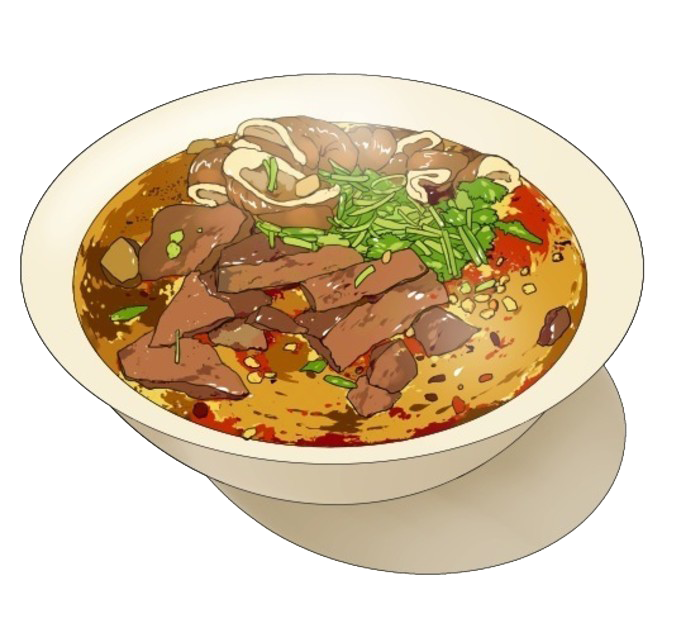
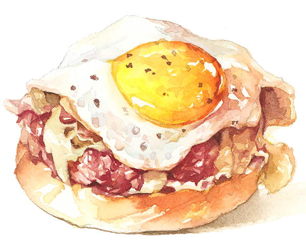
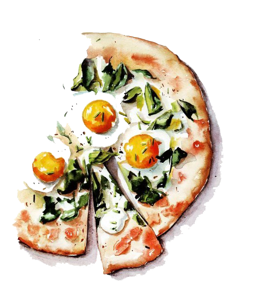
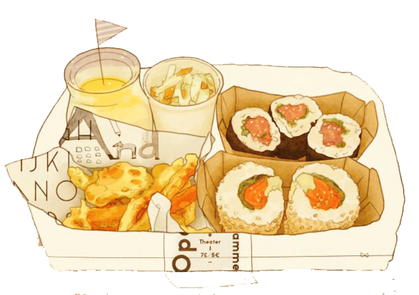

Toggle navigation
도장깨기란?
(current)
검증된 도장 리스트
백종원의 3대 천왕
수요미식회
전지적 참견시점
미슐랭 가이드 서울 2018
빕 구르망
도장 목록 +
검증중인 도장 리스트
사용자들의 도장 추천
뜨고 있는 도장들
당신의 도전을 기다립니다!
사용자
내 정보
내 도장 목록
도장깨기 후기
도장 북마크
로그아웃
도장(道場) [도ː장]
[명사]
1. 무예를 닦는 곳.
2. <불교>‘도량(부처나 보살이 도를 얻는 곳)’의 잘못



